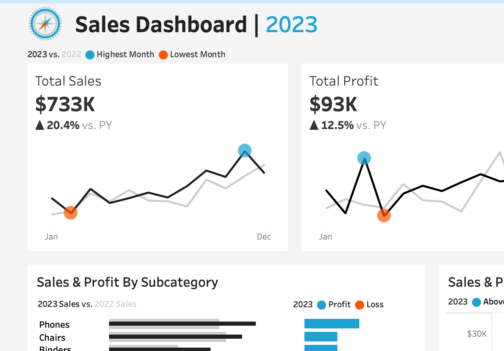

Team Project | October 2024 – Present
Leading a cross-functional team in designing a campus safety app to enhance security for female students. Defined product vision and roadmap using Agile methodologies. Conducted user research and gathered data from over 100 students to inform software design. Collaborated with campus safety officials and IT departments to integrate with existing systems and ensure compliance with FERPA and GDPR regulations.
Personal Project | November 2024
Developed interactive dashboards to analyze sales and customer behavior using Tableau.
Team Competition | April 2023
Collaborated with a team of 4 to analyze large datasets from the American Bar Association over a 3-day period. Proposed data-driven strategies to improve client-attorney interactions and streamline communication processes. Employed SQL and Python for data cleaning, exploration, and visualization, delivering actionable insights.
Capstone Project | August – December 2024
Developed a cross-platform campus navigation system (web and iOS) with integrated AR features for 3D building visualizations and real-time routing. Enhanced campus navigation efficiency by 50% and served over 1,000 users.
Web Version Download Titan Routes(iOS)February 2024 - May 2024
Graph Lab is an interactive web platform that brings complex algorithms like A* to life through step-by-step visualizations. Built with HTML, CSS, JavaScript, and Svelte, it offers a responsive, cross-browser learning experience.
Personal Project | December 2024
Creatorverse is a web application that allows users to manage and share their favorite content creators across various platforms like Twitch, YouTube, Instagram, and more. Users can add, edit, view, and delete content creators, with features like search functionality, pagination, and intuitive icons for quick actions.